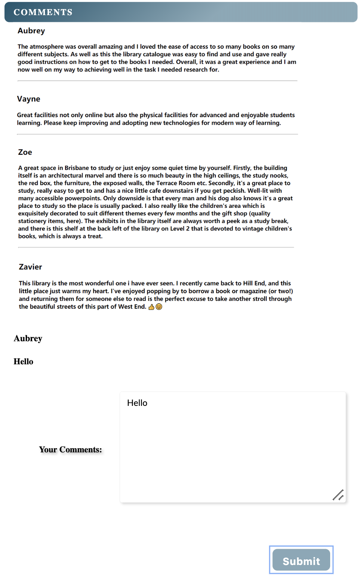
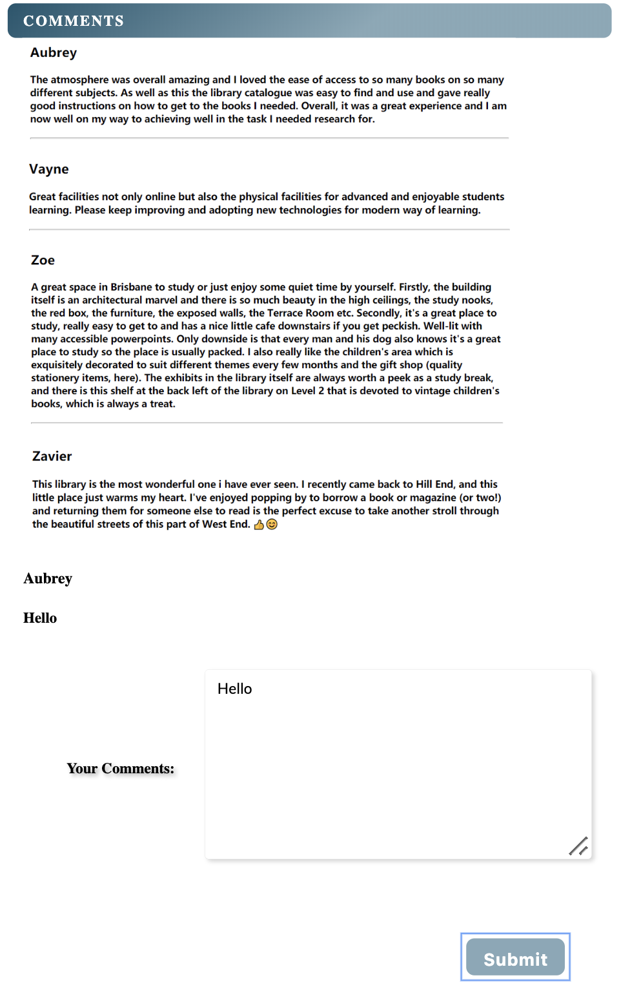

Z.A.V.I.E.R
P O R T F O L I O
A B O U T M E
I am MINGCHAO XU
You can call me Zavier.

I am an IT master student interested in visual effect and aesthetic. I am crazy about sci-fi movies so I like designing my work in Cyberpunk style. My favourite interface design is Tony Stark's AI system interface. Although the functions of Iron Man's AI system is too difficult to achieve at present, the dynamic elements on that interface make me feel like the system can communicate with me. So in this portfolio, I implement my favourite design style.
Until now I have learned much IT knowledge in these two semesters. I can do both front-end and back-end work because I found it is not much difficult to understand the logic of code. However, I am weak in conprehending conceptual knowledge which results that I will be confused when making a plan for a whole project. But through the practicals in DECO courses, I participated in the amazing process of how a project from a idea develop into a final work, and it is undeniable that it brings me a sense of achievement, and this feeling will encourage me to keep going.
A S S I G N M E N T R E F L E C T I O N
T a r g e t A u d i e n c e
As this topic is related to culture and history and is extended from language, so the target audiences of this topic are the young adults. To be exact, the people who are at the age group between 12 to 30.
On one hand, most of these young adults are well educated so that they have the comprehensive ability on this aboriginal culture. On the other hand, because young adults are usually creative, they can apply these culture to their daily life such as their online chatting. In fact, although some content of these aboriginal cultures may seem out of date, they are still worth to be remembered as a cultural heritage. In modern society, while the life pace is becoming faster than before, if some thing can be spread in our daily life, then it has the chance to be a pop culture.
C O O E E
The idea of COOEE is from a movie called Wind Talker. This movie describes a true story that in WWII, the Indians used their language to help the US army pass military intelligence in order to prevent the enemies from understanding the content of information even if they had intercepted it. My idea was to create an encryption system by using the data set of Aboriginal and Torres Strait Islander languages word lists from SLQ. But this system is only for recreation only instead of formal working purpose. I hope in this way, audiences' interest on aboriginal culture will be stimulated, promoting the inheritance of these various and unique culture.
I n t e r a c t i o n
The encryption system can translate user’s input into various aboriginal languages. It may looks like a dictionary, but my purpose is for users to use the aboriginal languages in their daily life. Actually, although the encryption system is not suitable for working or commercial purpose because of its public data source, it can be used in some entertainment aspect. For example, creating a riddle or a treasure map.
The other way I think can make the aboriginal language popular is to make a sticker generator. the concept comes from that many Chinese dialogue words are widely used in online chatting. In this way, although most Chinese speak mandarin in daily life, the dialogues from different parts of China are inherited. As stickers and emojis are very popular in online chatting , if aboriginal languages and funny images can be combined to generate stickers and these stickers can be applied to people's social contact on Internet, the aboriginal languages will be known by more people.
T a r g e t A u d i e n c e
This website is for people who are looking for a suitable reading spot, so anyone with this need can be our potential target audience. For example, parents can take their children to the reading point to accompany the learning process. Older people can go to the library to participate in some exciting social activities. Professionals can go to the library to access materials and participate in lectures. In short, as long as they are people who like to read, our website can provide them with different functions.
To be more specific, we believe our main target audience is white-collar workers and students who like to read. For workers, a library is a significant place. Based on the fierce competition in employment nowadays, workers also need to continue to learn in their free time in order to maintain their high employment value. Secondly, unlike students, students can enjoy the preferential treatment and quiet environments of the school library, such as free entry and free lending. It is difficult for workers to find a suitable reading place during work or free time. In addition, the website also provides event browsing, which provides users many opportunities to extend their social circle and know more like-minded friends.
B R I S B A N E R E A D I N G S P O T S
Brisbane Reading Spots is a website which is designed for convenient reading lovers to find reading spots in Brisbane. Since with the life pace accelerated by the technology revolution, reading, a good habit, is gradually being replaced by other entertainment. Thus, in order to promote individual improvement through reading, we want to do some effort to make reading become popular again.
M A I N F U N C T I O N S
The main function of this website is to provide available reading spots for our users. Reading spots can be libraries, bookstores and even cafe. So we implement API of public libraries data set from SLQ which provides detailed information of libraries in Queensland. According to the geographic location provided by API, we filter the libraries within 200 KM of Brisbane, which are the data we apply for our website.
We made a search bar which allows users to search the libraries through input key words and narrowing the range of their current locations to filter the nearest libraries. All the libraries searched will be listed below the search bar. When a user click a library, the page will turn to a specific library page which only illustrates the detail of the library they choose. In order to achieve this, we used PHP Session so that the information in previous page can be passed to the current page.
On our homepage, we set a map which labeled all the libraries in our selected data. The basic information of these libraries will be represented when labels are clicked. Additionally, we made some simulate content such as the recommendation of various kinds of reading spots, rating and comment functions, event recommendation and blog collection. These are what we planned to do in the future because of our technical and resource limitation. Our current MVP is to achieve the functions based on API, and we did it.
M Y C O N T R I B U T I O N
I participated in the whole process of our web development, but I mainly focused on PHP work in our team. Since PHP has more potential than html on functionality, we developed our main pages in PHP language. Based on our workshop's example, I made our website's structure by using PHP. Thus, when users are at a specific page, the menu will show its web location by displaying the page label in different colours, which can be seen as a navigation method.
The biggest difficulty I met in making PHP pages is to pass information from one page to another page. We want this function in Search page and library pages. Through PHP session, since a library button has been clicked, its unique id named by the library’s name will be acquired, then the id’s content will be passed to the library’s page through PHP Session. After that, when the library page gets the name of library(the id content), through filtering API content, the web only display the data which belongs to the user-selected library. The advantage of using PHP session is that before we implement database for our website, we can directly filter and present the external resource based on user’s choice. Thus, we do not need to make a page for each library.
E X P E C T I O N
From my view, our project is a successful practical because we implement what we learned on our website, like API and PHP technology. Besides, the website is practical since it can truly let users find libraries in Brisbane. When we do our project, we reference some place-recommendation website like YELP and Zomato, so our web structure is more like a modern place-recommendation website. Initially, we were going to make our website in mobile device size, but considering that demonstration will be more clear on a laptop, we finally changed it into a computer version.
P A R T A : D E S I G N E X P L O R A T I O N
In this stage, we generated the idea of our project basd on the API from SLQ including the purpose and type of our project. Firstly, we did a research through referencing similar types of applications and interviewing our target audiences. The result indicated that in modern society, when people spending more time on entertainment than reading, for reading lovers, quiet and confort reading places are in great demand. Under this circumstance, I think our purpose of finding reading spots is necessary and reasonable.
Then, we accomplished our work division. My work is to construct the structure of our websit and create the sitemap. Based on the initial sitemap, our designer designed the wireframes and high fidelity prototypes.
At the end of this stage, we had more high fidelity prototype.
O R I G I N A L S I T E M A P

W I R E F R A M E S


P R O T O T Y P E


P A R T B : D E M O
In part B, we made our initial demo in mobile size. In this demo, we achieved the basic functions through using API. At this stage, our coder used API and GPS plugin to filter the libraries in Brisbane area. Besides, I used JavaScript to add id for each library button once they were generated. Although at that time, we didn't have extra page to illustrate the chosen library's information, but the search page would hide other non-selected library buttons and expand more information of the selected library in its button, which is our original way to distinguish the user's choice from the rest of data.
Additionally, the hierarchical layout of our website was decided. By using this layout, our website can display like a mobile application.

P A R T C : D E V E L O P M E N T
In the final stage, we optimized our existing functions and finished our final version of this website. In this period, I have worked out the PHP session so that information transmition between pages was achieved.
Original Library Page
Final Library Page
At the same time, we added map on our homepage which can show the libraries' geographic locations. Then, since we finished all the main functions, we began to decorate the web by CSS and JS.

Original Library Page
Final Library Page
Additionally, many simulation contents were produced such as commenting and rating, content of other kinds of reading spots(ex. bookstore, cafe), user profile page and library-host events content.
 

W E E K 1
- COURSE BEGIN
-
Investigate data.qld.gov.au and begin Design Exploration individually.
W E E K 2
- GROUP DISCUSSION
-


Group Discussion Note
I thought out various ideas based on SLQ dataset. In the group discussion in Contact, these ideas were deeply investigated and some difficulties were came up.
W E E K 3
- Six Hat Activity
-
We had six hat activity in this week, my design exploration idea was discussed from the aspects of research difficulty, target audience and potential expansion content. Finally, the target audience had been narrowed in young adults.
W E E K 4
- Low Fidelity Prototype
-
I decided the two main interactions of my aboriginal-language-related idea, one is the language encryption system while the other is the sticker generator. I referenced some existing online editors and dictionaries, low fidelity prototypes were designed in this week.(See Design Exploration)
W E E K 5
- Individual Pitch
-
I finished the poster of my design exploration idea and had pitch on workshop, I referenced aboriginal pattern and designed my poster. It was special but personally I thought it lacked some visual materials such as the prototype.
W E E K 6
- Group Formation
-
This week, we began our team project. Our group selected Public Libraries dataset as our main data source. We planned to develop a mobile-sized website to assist reading lovers to find confortable reading spots. We distributed work and set weekly meeting time. At the end of this week, we clarified our website's purpose.
W E E K 7
- Proposal
-
At week7, we began our proposal. During this week's contact and grouping, our major achievement was discovering the difficulty in implementing API. Initially we want to use data from more than one API for our websites, but unique access ids were required for various APIs. As a result, we came up with two method. The first method was to implement a database to store all the data from different APIs. The challenge of this method was that none of us knew how to apply a database in our web especially when we were pressed for time. The other method was making simulated content for what we could not acquire substantially from APIs except SLQ's. This method was easy to achieve so we set the simulation content as our MVP.
W E E K 8
W E E K 9
- Demo & Test Plan
-
In this 2 weeks, we were working for 2 aspects. Coders focused on achieving main functions such as retrieving wanted data from our implemented dataset through narrowing search range and input keywords, filtering user's choice when user clicked a specific library button and acquiring user's GPS location. Designers set a series of test plan for our demo version. At the end of this two weeks, we showed our demo on contact. Although the aesthetic was not good, the main function was basically achieved.
W E E K 10
W E E K 11
W E E K 12
- Developing
-
This three week is the final period before the trade show. We enfroced our main functions, especially I worked out PHP Session so that users could jump to the specific library pages they selected from search page. At this stage, we tried using Git to manage our project. However, because of our faulty operation, we caused conflict in branches. Because of time constraint, we didn't fix that so we finally gave up. But whatever, we found that Git was useful and I am going to learn it deeply in the future.
At week 12, we began to decorate our website and make simulation content. We didn't use many plugins which resulted that our interaction style was not so cool as I expected. But whatever, we made big effort to finish our website, it is functional and looks like a practical place-recommendation website.
W E E K 13
- Trade Show
-
This is the ending of our major project. Since we made big effort on this project, we all felt a sense of achievement when we finally presented our work to the audiences. Comparing with the team which made games, our website was not very attractive on the first sight, but I still believe it is a practical website especially for reading lovers.
However, it is undeniable that we still have lots of aspects to improve. Firstly, if we could try to implement more plugins, our web's interaction would be more perfect and our development would be easier. I realised this point when I was making this portfolio. Secondly, when we introduced our website to the audiences, we should firstly emphasis our target audiences. Actually, as for our website, our target audiences are not refered to a group people with certain age but with certain hobby, which results that it would be harder for normal audiences to imagine themselves as our target audiences so that they might be confuse about our project's purpose.
I implement Cyberpunk design style on this website. Since it is a website about myself, I want to use my favourite style. I have referenced many sci-fi design style and elements on Pinterest. From my aspect, the significant point to achieve this style is to add some dynamic elements. The reason for that is this style is a simulation of the AI interface in sci-fi works, so it emphasis the interaction between human and computer.
I add many interaction plugins on my website. Although these interactions are not quite functional because they have no practical function as people imagined in sci-fi works, I still think they are very interesting. This website is a record of my experience in DECO7180, and also, it is a practical for me to create a computer work in my favourite style.
C O U R S E R E F L E C T I O N
-
I N I T I A L E X P E C T I O N
I understood that interaction is very important for a computing project. However, before having this course, the interactions I could add on my website were only some buttons or expand links for displaying hidden content. In fact, for a mature project, it should have interaction with external data and can react when data changes. So I hope that I can learn something which is related to both front end and back end. According to this course’s outline, I found we will learn AJAX, API and PHP in this course, which are known as the coding language in rendering and achieving information exchange. From my aspect, although I will always be attracted by beautiful interface and interesting hover style when I use a website or an application, the reason makes me to be a loyal user is the information and feeling it provides me. So, I believe learning how to implement large amount of information in a website is very practical.
-
T E A M W O R K
-
T E A M W O R K
Team work is also a vital part of this course. There are two sides working as a team. First, let us discuss its benefits. In a team, you can share the workload for the entire team, which can increase work productivity and quality if team members work well together. The challenging part of teamwork includes conflicts and balance of workload. If the leader didn’t keep the balance of workload between team members, the people who did little would feel left out sometimes. Also, everyone has their ideas; at this time, the team needs a process of consultation, mutual accommodation, and consensus. Besides, we also need to build trust together, define roles clearly, and respect individually.
I am glad that our team works well, we considered individual’s skills to distribute works so finally we finished our MVP, achieving both functionality and aesthetics on our project.
-
T E A M W O R K
We had conference regularly every week to discuss our current progress and our team leader would allocate individual's work for the next week. Our team staffing are 3 IT student with 1 ID students and our clear division of work are benefit by this. Initially, designer designed the prototypes and guide interaction session. Actually, designer came up the idea of human-computer interaction while we other guys focused on information interaction. From my perspective, a good web should combine both information interaction and human-computer interaction. Because in most cases, users use website to acquire new information which may benefit their life and work, or just for leisure purpose. But whatever, firstly they need to be comfortable with operating on this websites which includes good interface and clear navigation structure. After that, once user adapt to the operation, they need to get something practical from the website. In order to achieve, the information should be easy and fast to be accessed.
-
S I X H A T A C T I V I T Y
-
S I X H A T A C T I V I T Y
Six Hat activities leaded us to take our idea of Design Exploration in different aspects of consideration. As for my idea, the aboriginal language encryption system, in the black hat discussion, a difficulty came up that the aboriginal culture is minority so that target audience should be thought carefully. While in red hat discussion, my idea was supposed to be implemented in entertainment, which was why I came up with the idea of Sticker Generator. Then, in white hat discussion, I was suggested to combine aboriginal languages with their culture, so that the content of this project would be enriched.
It is undeniable that Six Hat is really a good way to extend and specify a topic through group discussion. Actually before doing this activity, I knew that this topic was necessary to be dug deeper, but I didn't know the actual directions. So in my future work, I will use this method to guide my exploration.
O T H E R W O R K
T H E W A N D E R I N G E A R T H S U R V I V A L G U I D E
This is my final work in DECO7140 last semester. I have chosen the popular Chinese science fiction The Wandering Earth as my theme to introduce users the knowledge of various disasters the survival methods under the circumstance of these disasters.
Because of the website's theme, I also implemented a similar style as this portfolio. Although there were many simulation content and function in The Wandering Earth Survival Guide, it was my first complete web work and also my first time to implement my favourite design style into practical. So whatever, this website is a very important milestone in my IT learning process.
Actually, for everytime I did DECO course works, I would try to use some new knowledge I learned in the course even if they were very difficult at first. I believe only in this way, I can make breakthroughs in my individual development.
Have a look at The Wandering Earth in Git